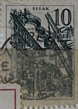
| SOURCE | TITLE| IMAGE MATCH | click to source page |
| GetArchive | Ironworks-in-Sisak - PICRYL - Public Domain Media Search Engine Public Domain Search | 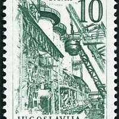 |
| machochlapovic.com | 50 Koruna 1964 | Auction 22 #1262 | Macho & Chlapovič | 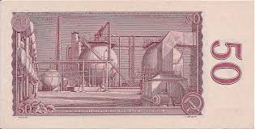 |
| nunofi.com | 50 Korunas 1964 Czechoslovakia | Buy at Nunofi.com | 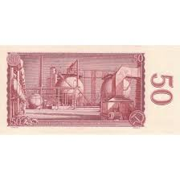 |
| eBay | Ella Enchanted Money Miramax LAMIA LOLLY 5 JOT BILLS with Premiere Props COA | eBay | 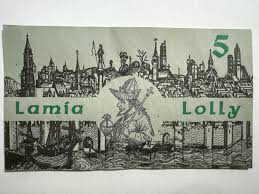 |
| Hi I'm new to this. Does anybody have and knowledge of these stamps? | 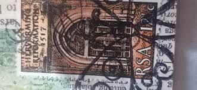 | |
| eBay | Historical Events Postage Brazilian Stamps for sale | eBay | 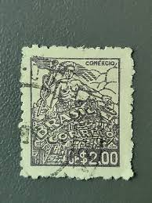 |
| PICRYL | 1908 Messina earthquake stamps - Public domain banknote scan - PICRYL - Public Domain Media Search Engine Public Domain Search | 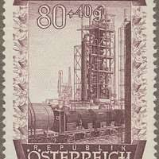 |
| iStock | Postage Stamp Germany 1958 Rudolf Diesel Inventor Stock Photo - Download Image Now - Diesel Fuel, Inventor, Postage Stamp - iStock | 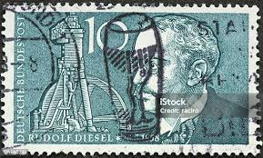 |
| SIA ''Doma Antikvariāts'' | New items : 50 Korun, Czechoslovakia, 1964 (1965) (VF), Pick 90d | 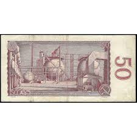 |
| Collectors Weekly | Collectible Italian Stamps | Collectors Weekly | 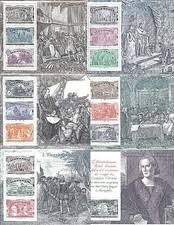 |
| | Katz Auction | Czechoslovakia 50 Korun 1964 | Katz Auction | 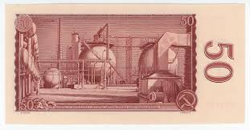 |
| Coin Community | 1963 20 Dollar Bill, 1950 D Ten And Five, Need Help With Grading And Mintage And Plate Rarity, - Coin Community Forum | 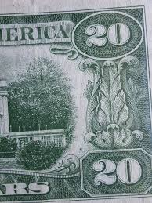 |
| eBay | Set of 3 diff. Spain 1937 Alcaniz 25, 50 cts. and 1 pta. Au-Unc. | eBay | 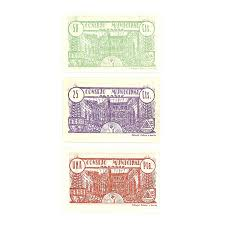 |
| eBay | Great Britain: Sc # 209, used (59382) | eBay | 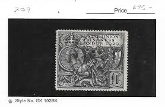 |
| Numiscorner.com | Banknote Czechoslovakia 50 Korun 1964 VF(20-25) – Numiscorner.com | 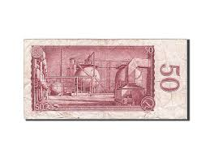 |
| Current flag collection. No real connection to Berber or Basque culture, just like the flags : r/vexillology | 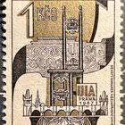 | |
| eBay | Germany Stamp Deutsches Reich REICHSPOST 3 Mark 1900 Jäschke Mi. Nr. 65 I (36235 | eBay | 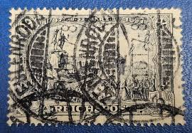 |
| World Stamps Project | Switzerland: types and varieties of postage stamps, 25th anniversary of UPU – World Stamps Project | 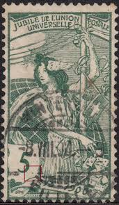 |
| TGW.cz | Czechoslovakia - banknotes | 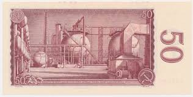 |
| machochlapovic.com | 50 Koruna 1964 (2 pcs) | Auction eLive 27 #1921 | Macho & Chlapovič | 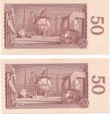 |
| Etsy | Vintage Norteno Herrera Esteli Empty Cigar Box - Etsy | 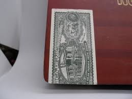 |
| eBay | Rare! Stamp From French Colonies - Congo No. 1 Used Date Cancellation | eBay | 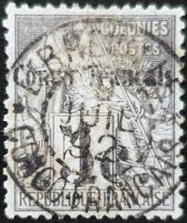 |
| machochlapovic.com | Banknotes (3 pcs) | Auction eLive 32 #4520 | Macho & Chlapovič | 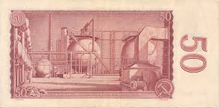 |
| eBay | 1928 Owyhee Chemical Products Co. Stock Certificate #1032, (Idaho) | eBay | 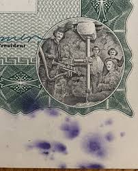 |
| South Dublin Auction | A large stockbook crammed with Irish stamps, approx. 1000. 4/5 pages 1930/40/50 fine used sets. Some | 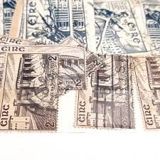 |
| eBay | COOP/CO-OPERATIVE - Vintage Silver Plated Serving Tray 1914 Commemorative | eBay | 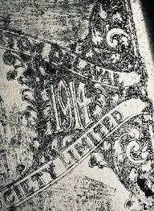 |
| Invaluable.com | Sold at Auction: Samuel Johnson Woolf, SAMUEL WOOLF AND AMY WORTHEN PENCIL SIGNED PRINTS | 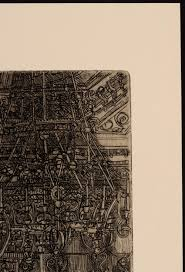 |
| eBay | Germany Stamp 1900, Sc A14, #64, 3m black violet ( real color blue black), used | eBay | 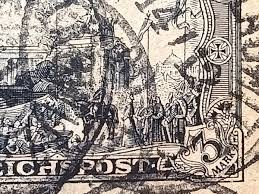 |
| dubrovnik-travel.net | Entry ticket for Dubrovnik city walls | 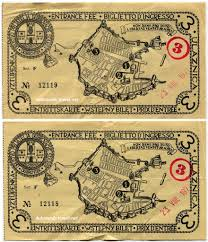 |
| Art-exlibris.net | Art-exlibris.net - exlibris by Ottohans Beier for Hans Amann | 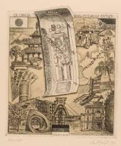 |
| eBay | Rouble XXII Olympic Games, Moscow 1980, Error on clock, 6 (VI) instead of 4(IV) | eBay |  |
| Numista | Items from the City of Görlitz (Lower Silesia) – Numista | 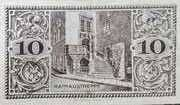 |
| eBay | Brazil 1943 1000 R Steel Industry Sc-581 Grey Used #Wh64 | eBay | 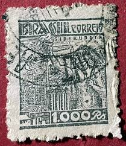 |
| CGB Numismatics | 50 Korun CZECHOSLOVAKIA 1964 P.090c 503957 Banknotes | 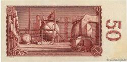 |
| Green, 1934-1940 2 cent Mexico Postage Stamp. Tehuana Indian Woman with basket near home with palm trees in background. | 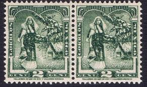 | |
| Paper Money Guaranty | PMG | 1968 Indonesia 100 Rupiah values and price guide | 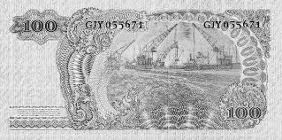 |
| I lived in Vancouver for many years | 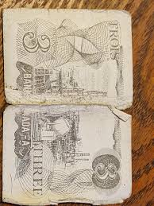 | |
| Discogs | N.O.T.A. – Live At The Crystal Pistol – Cassette (Single Sided), [r15115444] | Discogs | 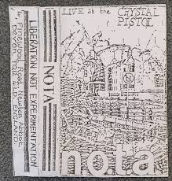 |
| Blogger.com | Big Blue 1840-1940: The Kaiser and his Horse: Loose or Tight Reins Variations | 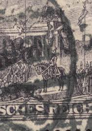 |
| eBay | Czechoslovakia P-90 50 Korun Year 1964 Uncirculated Banknote | eBay | 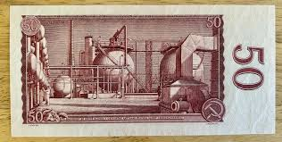 |
| eBay | 1914 $10 Ten Dollars New York FRN Fr-893b Four Of Kind 0s Red Seal Rare 10056004 | eBay | 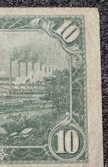 |
| Foronum | Banknote 50 patdesiat korún 1964 | Czechoslovakia | Foronum | 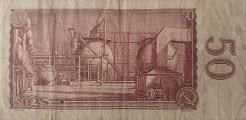 |
| Stamp Auction | catalog Level 3 | 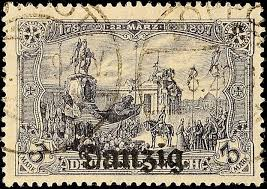 |
| World Stamps Project | Postage stamp flaws, errors and types – World Stamps Project | 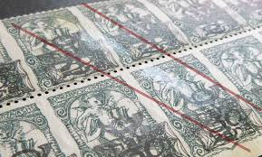 |
| eBay UK | Romania Old Banknote Douazeci Si Cinci Lei | eBay UK | 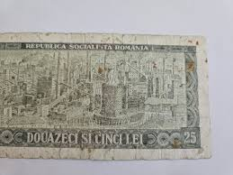 |
| Dreamstime.com | British Library Digitised Image From Page 134 Of "Through The Eye Of A Needle! Being A Collection Of Twenty-one Items From In Stock Image - Image of paper, pattern: 224057119 | 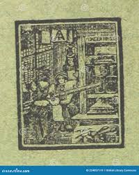 |
| eBay UK | 19th Century Silver 20th Century British Historical Medals & Medallions for sale | eBay UK | 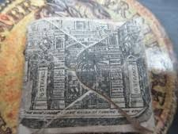 |
| eBay | Great Britain, Postage Stamp, #909 (2 Ea) Mint NH, 1980 London (AD) | eBay | 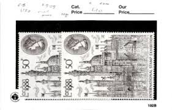 |
| Burda Auction | Complete auction / Czechoslovakia 1918-1939 / Philately / Mail Auction | Burda Auction | 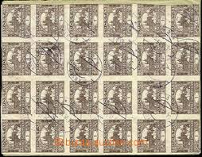 |
| Dreamstime.com | Switzerland - Circa 1900 : a Postage Stamp Printed in the Swiss Showing a Painting of a Woman in Art Nouveau on the Occasion of Th Editorial Stock Image - Image of circa, bern: 202044819 | 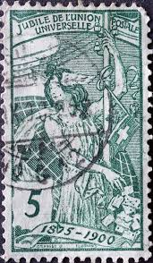 |
| Note of the Day: For #WomenWednesday, here's a Dominican Republic 2009 500 Pesos Oro showing poet Salome Urena de Henriquez alongside her son Pedro, who was also a writer. See more women | ||
| Free stamp catalogue | Stamps from Sovereign Order of Malta - Freestampcatalogue.com - The free online stampcatalogue with over 500.000 stamps listed. | |
| All Numis | Banknotes Catalog - List of banknotes for 1960-1964 Issue - Státní Banka Československá, Czechoslovakia | |
| Invaluable.com | Sold at Auction: 1974 $20 Error $20 bill with dry print on reverse Double Print | |
| Saatchi Art | double black queen undone Printmaking by Gillie Holme | Saatchi Art | |
| MA-Shops | 50 KORUN 1964 CZECHOSLOVAKIA PMG 66 EPQ GEM POP ONE! GEM UNCIRCULATED | MA-Shops |  |
| Ukrainian Philatelic and Numismatic Society | Vol. 49 No. 1 (84) 2001 ISSN 0198-6252 | |
| notafilia-kp.com | 50 korun, 1964 | notafilia-kp.com | 80479 | paper money | |
| Etsy | Proclaim Liberty - Etsy | |
| UB - Universitat de Barcelona | Zetzner, Lazarus, -1616 |